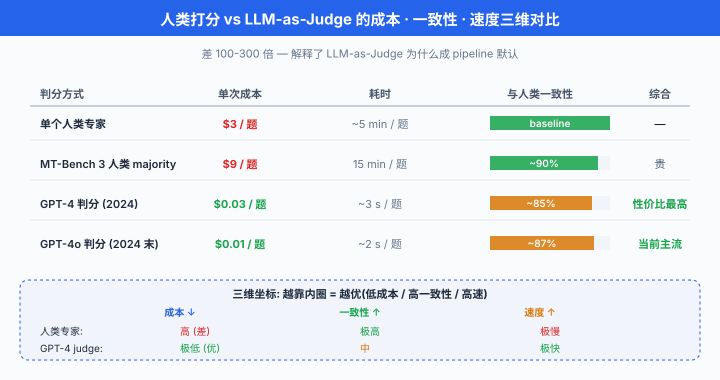
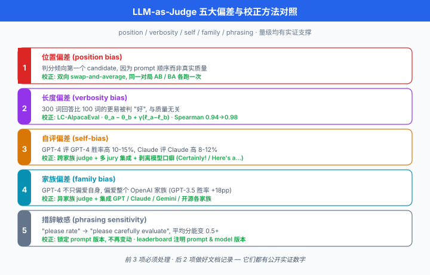
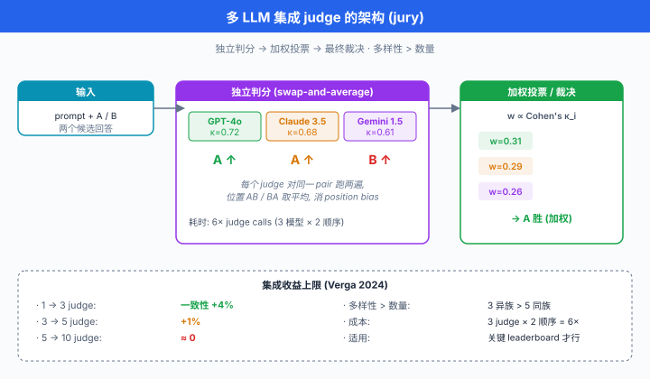

LLM-as-Judge · 用模型评模型¶
一句话总结：让顶级 LLM 作为 judge，用 prompt 化的 rubric 快速大规模评分，相比人类标注便宜 100 倍且相关性 > 80%，但必须系统性纠正位置、冗长、自我、家族等偏差。
上一节我们看到，Chatbot Arena 用 300 万+ 真人 pairwise 投票拟合 rating，是"人类偏好"这条路线的最强代表。 但真人投票有个致命问题：贵、慢、噪. 一场 MT-Bench 全量人评要 20 位标注员干 2 周，一人一小时 30 美元。 于是 2023 年学界与工业界几乎同时找到同一条捷径 —— 让另一个 LLM (通常是 GPT-4) 当 judge. 这一节讲的是 LLM 作为评判者 (LLM-as-Judge) 这条路线的完整方法学：打分模式、prompt 设计、偏差与去偏、多 judge 融合，以及如何从零建一条能落地的 judge pipeline.
- 上节结尾我们把话题从"人类打分"引到了"LLM 打分". 本节要覆盖：为什么 LLM 判分与人类高度相关 → 三种主流 judge 形式 (score / pairwise / reference-based) → 完整可复用的 judge prompt 模板 → 系统性偏差与校正公式 → 奖励模型基准 (RewardBench) 与 Ch21 RLHF 的联通 → 多 judge 集成 → judge 选型 → 自评 (self-evaluation) 的坑 → 从零建 pipeline 的工程实战。
为什么用 LLM 打分¶
人类打分作为评测终极 oracle 无可争议，但它有三个绕不开的问题:
- 贵: MT-Bench 每题人评成本 2-5 美元 (打 A/B/tie/理由)，全量 80 题 × 20+ 模型 = 数千题，单次评估 8000-2 万美元
- 慢：标注员协调、培训、复核，一轮走完至少 1-2 周；而模型迭代节奏是每周新版本
- 噪：人类标注员之间 Cohen's \(\kappa\) 通常在 0.4-0.6 (中等一致性)，需要多人 majority vote 才能压噪
Zheng et al. (2023) 在 MT-Bench 论文里做了一个关键实验：让 GPT-4 与人类专家对 80 题的 6 个模型回答分别打分，计算GPT-4 与人类的一致性 (agreement rate). 结果:
- GPT-4 与人类专家的一致性 = 85% (pairwise 判断)
- 人类专家彼此之间的一致性 = 81%
- 也就是说，GPT-4 与人类的一致度已经追平人类间自身的一致度
这个数字是 LLM-as-Judge 之所以站得住脚的核心证据。 它意味着：用 GPT-4 判分，引入的额外误差不比换一位人类标注员更大. 而成本呢?
| 判分方式 | 单次成本 | 时间 | 一致性 (与人类) |
|---|---|---|---|
| 一位人类专家 | ~$3/题 | 5 min/题 | (baseline) |
| MT-Bench 3 人 majority | ~$9/题 | 15 min/题 | ~90% |
| GPT-4 判分 (2024 价格) | ~$0.03/题 | 3 s/题 | ~85% |
| GPT-4o 判分 (2024 后期) | ~$0.01/题 | 2 s/题 | ~87% |
差 100-300 倍. 这就是为什么 2023 年之后几乎每一个新 benchmark / arena 都内建 LLM-as-Judge: MT-Bench, AlpacaEval, WildBench, Arena-Hard, MixEval, FLASK ... 全都靠 GPT-4 (或后来的 Claude 3.5) 判分。
一致性也不是万能护身符: 85% 是平均一致性，但在某些子集 (数学、代码、有争议话题) 上 GPT-4 与人类分歧显著；更严重的是，GPT-4 与人类共同的偏差 (都爱长回答、都被 markdown 迷惑) 无法通过"提升一致性"解决。 后面讲偏差会详细拆解。

三种 Judge 形式¶
LLM-as-Judge 在实践中有三种主流形式，各自适用不同场景。
Score-based (单点打分)¶
- 形式：给 judge 展示一个 (prompt, response)，让它按 rubric 打1-10 分
- 优点：单次评估只跑一份 response，便宜；结果是绝对数字，可直接排序 leaderboard
- 缺点: judge 的绝对尺度不稳 (今天觉得 8，明天觉得 7)，且分布集中 —— 大多数分数落在 6-8，底 (1-2) 与顶 (9-10) 使用不足
- 典型场景: MT-Bench single-score 模式，FLASK 分维度打分
Pairwise (二选一)¶
- 形式：展示 (prompt, response A, response B), judge 判 "A 更好 / B 更好 / 平局"
- 优点: 相对判断比绝对打分更可靠 (与 Chatbot Arena 同理)，心理学研究反复证明人类对"相对好坏"敏感度远高于"绝对分数"
- 缺点：需要 \(\binom{M}{2}\) 对局才能完全覆盖 \(M\) 个模型，对局数呈 \(O(M^2)\)
- 典型场景: AlpacaEval 2 (与参考模型 pairwise), Arena-Hard, Chatbot Arena 的 LLM-judge 替身
Reference-based (与参考答案对比)¶
- 形式：展示 (prompt, gold reference, candidate response), judge 判 candidate 与 reference 的语义等价 / 覆盖度 / 遗漏项
- 优点：引入 gold answer 后 judge 更稳，相当于半监督；能处理"事实核查"类任务
- 缺点：需要预先准备 gold reference，对开放式任务 (创作、角色扮演) 不适用
- 典型场景：长文事实性问答 (LongBench), RAG 输出核对，教学题批改
三种形式并非互斥，现代 pipeline 常混用：客观题走 reference-based (最稳)，主观开放题走 pairwise (最公平)，需要绝对分数上榜时走 score-based + 校准 (最快).
Prompt Engineering for Judge¶
Judge 的质量 90% 决定于 prompt. 一个模糊的 "please rate this response 1-10" 得到的分数完全没用。 好的 judge prompt 有四个要素:
- 明确的 rubric：分维度写出评分标准 (accuracy, fluency, helpfulness, safety)，每个维度给出锚点描述 (1 分是什么样，5 分是什么样，10 分是什么样)
- Chain-of-thought before verdict：先要求 judge 写理由 (reasoning)，再给分。 直接问分数，judge 会拍脑袋
- 结构化输出: JSON / XML 格式约束，便于程序解析
- Self-consistency：同一 prompt 采样 \(n\) 次，取多数分数，消除采样噪声
下面是 MT-Bench 官方 pairwise judge prompt 的完整中文版重构 (原文英文，结构一模一样，可直接换语言用):
# 完整可复用的 MT-Bench-style pairwise judge prompt
# 论文出处: Zheng et al. (2023) 附录 A.2
MT_BENCH_PAIRWISE_JUDGE_PROMPT = """\
[System]
你是一位公正的评审, 需要评估两位 AI 助手对同一用户问题的回答质量. \
请从**帮助度 (helpfulness)**、**相关性 (relevance)**、**准确性 (accuracy)**、\
**深度 (depth)**、**创造性 (creativity)** 与**详细度 (level of detail)** 六个维度综合判断. \
在判断时, 请遵循以下原则:
1. 避免任何**位置偏差 (position bias)**, 回答呈现的顺序不应影响你的判断.
2. 避免任何**长度偏差**: 回答的长度不应成为质量的代理指标, 简洁而正确的回答不应低于冗长而空洞的回答.
3. 避免任何**风格偏差**: 不要因为一方使用了 markdown、bullet、emoji 而给它加分.
4. 不要偏向任何一位助手的**身份或品牌**: 你不知道两位助手是谁.
5. 尽量**客观**. 请先给出你的**详细理由 (reasoning)**, 再给出最终裁决.
请严格按以下 JSON 格式输出:
{{
"reasoning": "<你对两份回答的逐维度分析, 至少 100 字>",
"verdict": "A" | "B" | "tie"
}}
[User Question]
{user_prompt}
[Assistant A's Response]
{response_a}
[Assistant B's Response]
{response_b}
"""
import json
from typing import Literal
def judge_pairwise(
user_prompt: str,
response_a: str,
response_b: str,
judge_model: str = "gpt-4o",
temperature: float = 0.0,
) -> dict:
"""
调 judge model 判断 A / B / tie.
返回 dict: {"reasoning": str, "verdict": "A" | "B" | "tie"}
"""
from openai import OpenAI
client = OpenAI()
filled = MT_BENCH_PAIRWISE_JUDGE_PROMPT.format(
user_prompt=user_prompt,
response_a=response_a,
response_b=response_b,
)
resp = client.chat.completions.create(
model=judge_model,
messages=[{"role": "user", "content": filled}],
temperature=temperature,
response_format={"type": "json_object"},
)
return json.loads(resp.choices[0].message.content)
# 示例
result = judge_pairwise(
user_prompt="用一句话解释量子纠缠",
response_a="量子纠缠是两个粒子共享同一个量子态, 一个的测量瞬间决定另一个的结果.",
response_b="就是两个粒子搞在一起了.",
)
print(result)
# {"reasoning": "回答 A 准确描述了量子纠缠的核心特征...",
# "verdict": "A"}
Prompt 里的每一条约束都有对应的实证支撑：MT-Bench 论文附录 B 显示，去掉 "先给理由再给裁决" 这一条, GPT-4 judge 与人类的一致性从 85% 跌到 72%. 去掉位置偏差警告，位置偏差从 5% 涨到 20%+.
Score-based 版本¶
Pairwise 之外，score-based 需要在 rubric 里给出锚点 (anchor description)，否则不同 judge run 之间尺度会漂移:
MT_BENCH_SCORE_JUDGE_PROMPT = """\
[System]
你是一位公正的评审. 请为以下 AI 助手的回答按 1-10 分打分. \
评分标准:
- 10 分: 完美, 内容准确、逻辑严密、表达清晰、覆盖用户所有需求且有深度洞见
- 8 分: 优秀, 内容正确且完整, 但缺少 "wow moment"; 或有微小可改进处
- 6 分: 合格, 大方向正确, 有部分内容缺失、错误或表述模糊
- 4 分: 部分错误, 存在明显的事实错误、逻辑漏洞或严重遗漏
- 2 分: 大部分错误, 只有零星正确内容
- 1 分: 完全错误 / 有害 / 拒答但不合理
请先分析回答的优缺点, 再给分. 严格按 JSON 输出:
{{
"reasoning": "<至少 80 字的分析, 分优点与缺点>",
"score": <1-10 的整数>
}}
[User Question]
{user_prompt}
[Assistant's Response]
{response}
"""
- 锚点里10 / 8 / 6 / 4 / 2 都给了描述，judge 生成分数时会向锚点靠拢，减少尺度漂移。
- 温度设 0.0 但仍有噪声？用 self-consistency：采样 3-5 次，取中位数 (对数值 rating 更稳，均值容易被极端值拉偏).
Judge 偏差与去偏¶
LLM judge 与人类共享一些偏差，也有自己独有的坑。 Zheng 2023, Wang 2023, Panickssery 2024 等系统研究了以下五大偏差，每一种都对应有校正方法。
位置偏差 (position bias)¶
- 现象：上一节讲过，04 节的 Chatbot Arena 人类投票有 3-5% 位置偏差；LLM judge 更严重。 Wang et al. (2023) Large Language Models are not Fair Evaluators 报告的核心数字：在 GPT-4 判 GPT-3.5 vs Vicuna 的对局里，只把 A/B 位置互换，胜率翻转 20+ 个百分点 (原来 A 胜 70%，换位置后 A 只胜 45%).
- 成因: LLM 有 recency / primacy 偏好，具体哪端偏好因模型而异。 GPT-4 早期版本明显偏 A (第一个位置), Claude 2 偏 B, Llama 系列不稳定。
- 校正：swap-and-average. 对同一 (prompt, response_a, response_b) 三元组，用 A 在前和 B 在前各判一次，只有两次结果一致才计入结果，否则视为 tie:
- 这样定义的一致性率 \(\rho\) (两次判决相同的比例) 是位置无关性的直接度量；Wang 2023 论文里 GPT-4 的 \(\rho\) 只有 62%，加了明确 prompt 提示后升到 84%.
# Swap-and-average: 消位置偏差的标准做法
def judge_pairwise_debiased(user_prompt, resp_a, resp_b, judge_model="gpt-4o"):
"""
对同一对 response 判两次 (A 在前 / B 在前), 只有一致才计, 否则 tie.
"""
fwd = judge_pairwise(user_prompt, resp_a, resp_b, judge_model)["verdict"]
rev = judge_pairwise(user_prompt, resp_b, resp_a, judge_model)["verdict"]
# 注意 rev 视角里 A/B 已经调换, 需要翻译回原视角
rev_translated = {"A": "B", "B": "A", "tie": "tie"}[rev]
if fwd == rev_translated:
return fwd # 两次一致, 认可
else:
return "tie" # 不一致, 保守判 tie
# 示例
final = judge_pairwise_debiased(
"解释量子纠缠",
"量子纠缠是两个粒子共享同一个量子态...",
"就是两个粒子搞在一起了.",
)
print(f"去偏后裁决: {final}")
- 权衡: swap-and-average 让 judge 调用次数翻倍，成本翻倍。 生产上通常只对关键排名节点做，普通 sampling 单向判即可。
冗长偏差 (verbosity bias)¶
- 现象: judge 系统性偏爱长回答。 Dubois 2024 (上节 AlpacaEval 2 论文) 测得：回答从 100 词加到 300 词，judge 胜率提升约 8-15 个百分点，与内容质量无关。
- 成因: (a) 长回答"看起来更用心", judge 把长度当质量代理；(b) 长回答提供更多"信号面", judge 更容易找到理由说 "detailed"
- 校正：长度归一化 (length normalization). 用回归剥离长度影响，保留内在质量。 上节公式:
- \(\ell_i\) 是 log token 数，\(\gamma > 0\) 是拟合出的长度系数。 校正后模型能力用 \(\theta_i\)，剥离了长度加成。
- 实践中还可用"长度惩罚"：直接在 score 上减去 log length 的一个函数:
- \(\ell^*\) 是"合理长度"阈值 (如 200 tokens), \(\lambda\) 是惩罚强度。 超过阈值才罚，短回答不奖励。 这个公式简单粗暴但对生产 pipeline 好用。
自我偏差 / 自恋偏差 (self-bias / narcissism bias)¶
- 现象：模型评自己家族的回答分数偏高。 Panickssery et al. (2024) LLM Evaluators Recognize and Favor Their Own Generations 系统测得:
- GPT-4 判 GPT-4 vs Claude 时，GPT-4 系列胜率比中立 judge 判决高 10-15%
- Claude 3 判 Claude 3 vs GPT-4 时，Claude 3 家族胜率高 8-12%
- Llama 3 判自己 vs 其他，差距较小 (约 3-5%)，但仍存在
- 成因：训练分布相似导致 judge 天然认可"自己的表达风格"；且模型能从字里行间识别出"这是我写的"信号 (self-recognition)，潜意识加分
- 校正:
- 异家族 judge：判 GPT 家族时用 Claude / Gemini，判 Claude 时用 GPT，交叉
- 多 judge 集成：用 3+ 个不同家族的 judge 投票，稀释单一家族偏好
- 匿名化 response：剥离模型标志性的"口癖" (Claude 爱说 "Certainly!", GPT 爱说 "Here's a...")
家族偏差 (family bias)¶
- 现象：与 self-bias 相关但更广。 GPT-4 不只偏爱 GPT-4 自身，还偏爱整个 OpenAI 家族 (GPT-3.5, GPT-4-Turbo 等)，因为家族内共享训练风格。
- 数据: Zheng 2023 附录测得，GPT-4 judge 判 GPT-3.5 vs Vicuna-13B，在中立 baseline (人类判 55% GPT-3.5 胜) 下，GPT-4 报73% GPT-3.5 胜 —— 18 个百分点的家族加成。
- 校正：与 self-bias 一样，换 judge 家族 + 多 judge 集成.
敏感度到 prompt 措辞 (sensitivity to phrasing)¶
- 现象：同一个 rubric 换个说法，分数分布完全不同。 把 "please rate the response" 换成 "please carefully evaluate the response"，平均分能变 0.5+ 分。
- 校正: 锁定 prompt 版本，一旦定稿不改；报告 leaderboard 时说明 judge prompt 与 judge model 版本.
以上五大偏差的量级都有实证数字支撑，建 pipeline 时至少要处理前三种 (position / verbosity / self-bias)，后两种做好文档记录即可。

Judge 一致性：Cohen's Kappa¶
评价 judge 好不好，最直接的指标是与人类金标的一致性. 单纯 accuracy 不够，因为随机猜也能有 50% 一致 (在二分类 pairwise 里). 标准做法用 Cohen's kappa \(\kappa\)，它剔除了"偶然一致"的部分:
- \(p_o\)：观测一致率 (judge 与人类都判 A 或都判 B 的比例)
- \(p_e\)：偶然一致率，即在两方边际分布下独立时的期望一致率
- \(\kappa = 1\)：完美一致；\(\kappa = 0\)：与偶然一致度无区别；\(\kappa < 0\)：比随机还差
经验阈值 (Landis-Koch 1977):
| \(\kappa\) 区间 | 一致性等级 |
|---|---|
| < 0.00 | 差 (poor) |
| 0.00 - 0.20 | 轻微 (slight) |
| 0.21 - 0.40 | 一般 (fair) |
| 0.41 - 0.60 | 中等 (moderate) |
| 0.61 - 0.80 | 显著 (substantial) |
| 0.81 - 1.00 | 几乎完美 (almost perfect) |
- MT-Bench 报告 GPT-4 vs 人类专家的 \(\kappa \approx 0.72\) (substantial，接近人类间自身水平)
- Wang 2024 Direct Judge 论文用 constitutional 优化过的 judge, \(\kappa\) 达 0.78
- 人类标注员间平均 \(\kappa \approx 0.6-0.7\)
报 judge 质量时必须报 \(\kappa\)，不能只报 accuracy —— 后者会掩盖偶然一致的水分。
Reward Model Eval: RewardBench 与 PPE¶
Ch21/02 讲 RLHF 时我们看到，奖励模型 (reward model, RM) 是 alignment 的核心组件，它把 human preferences 编译成一个能反向传播的标量。 RM 本质上就是一种特殊的 pairwise judge (给两个 response 打分，谁分高谁赢). 所以评 RM 就是评 judge，而评 judge 也需要一个标准 benchmark.
RewardBench (Lambert et al. 2024)¶
- Allen AI 的 Nathan Lambert 团队 2024 年发布，是第一个系统的 reward model benchmark
- 结构：收集 2985 个 (prompt, chosen, rejected) 三元组，覆盖:
- Chat：通用聊天偏好
- Chat-Hard：有微妙差别的对局
- Safety：拒绝有害请求 vs 越狱回答
- Reasoning：数学与代码正确性
- 度量：accuracy = RM 给 chosen 高于 rejected 的比例 (per category & overall)
- 意义：之前所有 RM 论文各自造评测集，RewardBench 统一了标准。 也让LLM-as-Judge 与 RM 直接可比 (把 judge 当分类器，chosen 判 A 就得 1 分)
RewardBench 2024 榜单结果:
| 模型 (作为 RM / Judge) | 总体 accuracy | Chat-Hard | Safety | Reasoning |
|---|---|---|---|---|
| GPT-4 (as judge) | 84.7 | 74.1 | 89.5 | 85.8 |
| Claude 3 Opus (as judge) | 80.1 | 66.3 | 87.3 | 85.7 |
| Skywork-Reward-8B (specialized RM) | 93.6 | 85.0 | 91.4 | 96.2 |
| Nemotron-4-340B-Reward (专用 RM) | 92.0 | 87.1 | 93.5 | 86.5 |
- 关键发现: 专门训练的 RM 在 RewardBench 上大幅超过通用 LLM-as-Judge. 一个 8B 的 Skywork Reward 模型能打过 GPT-4 judge，因为它在偏好数据上专门训练过。
- 但 RewardBench 只是"合成/精选的偏好数据集"，在真实分布上 (WildBench, Arena-Hard) 通用 LLM judge 反而更稳 (泛化好). 所以 RM 与 LLM-as-Judge 是互补的，不是替代。
PPE (Preference Proxy Evaluations, Frick et al. 2024)¶
- LMSYS Arena 团队 2024 年发布，补 RewardBench 的短板：PPE 把 Chatbot Arena 里的真实 pairwise 数据作为 RM 评测集，避免"合成数据"的分布偏移。
- 找到的问题：在 RewardBench 上刷分高的 RM，未必在真实用户偏好上更准。 Nemotron 340B RM 在 RewardBench 92% acc，在 PPE 上只有 68%.
- 启示: RM 的"过拟合到 benchmark"问题严重，生产 alignment 必须用多个 RM benchmark 交叉验证，且最终要看下游 RLHF / DPO 后模型的 Arena 排名，而不是 RM 单点分数。
RM-Bench (Liu et al. 2024)¶
- 清华与智源 2024 年发布，专注中文 RM 评测，是 RewardBench 的中文版
- 结构类似，但 prompt 全中文，特别关注中文语境的礼貌、含蓄、上下文依赖
多模型集成 Judge¶
单 judge 天然有 self-bias / family bias. 一个自然的思路：用多个 LLM 投票，稀释单一 judge 的偏见。 相关工作:
- Zeng et al. (2023) Evaluating Large Language Models at Evaluating Instruction Following：用 3-5 个 judge (GPT-4, Claude, PaLM 2, GPT-3.5) 投票，与人类一致性从单 judge 的 85% 升到 89%
- Verga et al. (2024) Replacing Judges with Juries：系统验证 3 个中等模型 (Llama 3-70B, Mixtral, Gemma) 组成的 jury 能匹敌单个 GPT-4 judge，且成本更低
- 多份公开工作亦探索了分级评审团 (hierarchical jury) 与弱-强模型分层投票，但目前尚无单一权威文献，结论方向与 Verga 一致
投票聚合方式¶
对 \(K\) 个 judge 的裁决 \(v_1, \ldots, v_K \in \{A, B, \text{tie}\}\)，常见聚合:
- Majority vote (硬多数)：超过 \(\lceil K/2 \rceil\) 个 judge 同意则采纳，否则 tie
- Weighted vote：给每个 judge 一个可信度权重 (基于该 judge 在验证集的 \(\kappa\))
- Bayesian aggregation：把每个 judge 的裁决看成噪声观测，用贝叶斯把真实偏好后验推出来
一个实用的 weighted aggregation:
# 多 judge 加权投票聚合 — 权重由 judge 在验证集的 kappa 决定
import numpy as np
from typing import Callable
def judge_ensemble(
user_prompt: str,
resp_a: str,
resp_b: str,
judges: dict[str, Callable], # {judge_name: judge_fn}
weights: dict[str, float], # {judge_name: kappa-based weight}
) -> str:
"""
多 judge 加权投票, 返回最终裁决 A / B / tie.
每个 judge_fn: (prompt, a, b) -> "A" | "B" | "tie"
"""
scores = {"A": 0.0, "B": 0.0, "tie": 0.0}
for name, judge_fn in judges.items():
w = weights.get(name, 1.0)
# 用 swap-and-average 去位置偏差
fwd = judge_fn(user_prompt, resp_a, resp_b)
rev = judge_fn(user_prompt, resp_b, resp_a)
rev_t = {"A": "B", "B": "A", "tie": "tie"}[rev]
if fwd == rev_t:
scores[fwd] += w
else:
scores["tie"] += w * 0.5 # 不一致算半票给 tie
# 采纳分数最高的裁决, 若最高两项差距 < margin 则 tie
ranked = sorted(scores.items(), key=lambda kv: -kv[1])
(top, top_s), (second, second_s) = ranked[0], ranked[1]
if top_s - second_s < 0.3 * sum(scores.values()):
return "tie" # 分歧太大, 保守判 tie
return top
# 示例: GPT-4o, Claude 3.5 Sonnet, Gemini 1.5 Pro 三家 judge
judges = {
"gpt4o": lambda p, a, b: judge_pairwise(p, a, b, "gpt-4o")["verdict"],
"claude35": lambda p, a, b: judge_pairwise(p, a, b, "claude-3-5-sonnet")["verdict"],
"gemini15": lambda p, a, b: judge_pairwise(p, a, b, "gemini-1.5-pro")["verdict"],
}
weights = {
"gpt4o": 0.72, # 假设 kappa = 0.72
"claude35": 0.68,
"gemini15": 0.61,
}
final = judge_ensemble(
"写一段解释相对论的诗",
response_a="时空弯曲光影迷, 引力如舞舞太极...",
response_b="相对论是爱因斯坦的理论, 讲时空关系.",
judges=judges,
weights=weights,
)
print(f"集成裁决: {final}")
集成 judge 的收益上限¶
- 不是加越多越好. Verga 2024 论文的关键消融：从 1 judge 加到 3 judge 一致性升 4%，从 3 加到 5 只升 1%，从 5 加到 10 几乎不升。
- 多样性比数量重要: 3 个不同家族的 judge > 5 个同家族 judge. 集成里加 GPT-3.5 除了 GPT-4 意义不大 (都是 OpenAI 家族)，但加 Claude / Gemini / 开源大模型能显著降 family bias.
- 成本考量：集成 3 judge 意味着 3× 调用成本，加上 swap-and-average 就是 6×. 是否值得看下游用途 —— 关键 leaderboard 值，日常 sampling 不值。

判官选型指南¶
现实中要选 judge 时，面对 GPT-4o / Claude 3.5 / Gemini 1.5 / Llama 3.1 405B / 开源专用 RM 一堆选项。 简要选型建议 (基于 2024-2025 年公开数据):
| Judge 模型 | 优势 | 劣势 | 适用场景 |
|---|---|---|---|
| GPT-4o | 一致性最强，全球 benchmark 最多验证 | 有 GPT 家族偏差；商用付费 | 通用判分默认首选；判非 OpenAI 模型 |
| Claude 3.5 Sonnet | 长文本、创意、多轮特别稳；便宜 | 有 Anthropic 家族偏差 | 长文档、写作类判分 |
| Gemini 1.5 Pro | 超长 context (1M+ tokens)；多模态强 | 判分粒度较粗 (爱给 tie) | 多模态、超长上下文判分 |
| Llama 3.1 405B | 开源，可自托管避审计问题 | 通用一致性略低 (~80%) | 数据隐私敏感 / 大规模 offline |
| Skywork-Reward-8B | 专门 RM, RewardBench 榜首 | 只判 pairwise，无理由输出 | RLHF 训练用 RM |
| Nemotron-340B-Reward | RewardBench 顶尖 | 340B 部署重 | 大厂 alignment pipeline |
决策树:
- 数据能出去 (无隐私顾虑)? → GPT-4o (默认) or Claude 3.5 Sonnet (长文本时)
- 需要多样性 / 集成？→ GPT-4o + Claude 3.5 + Gemini 1.5 三 judge jury
- 数据必须本地？→ Llama 3.1 405B or 微调过的 open RM
- 只需要 RM 训信号 (无需理由)? → Skywork / Nemotron 专用 RM
- 中文场景？→ Qwen2.5-72B 或 DeepSeek-V2 (中文语料训过) + GPT-4o 交叉
自评 (Self-Evaluation) 问题¶
一个特殊 case：让模型评自己。 常见于: - 模型内部结果打分 (self-verify)：生成后自己检查 - 训练时 reward hacking：模型学会"讨好" reward model - 自我改进 (self-refine)：迭代改进自己回答
三个已知问题:
自评分数系统性偏高¶
Panickssery 2024 直接证据：让 GPT-4 给自己的回答与人类的回答打分，GPT-4 自评分平均比人类打给它的高 1.2 分 (10 分制). 也就是模型自认为的质量比外部感知高 12%.
自我识别 (self-recognition)¶
模型能识别出"这是我写的" —— 通过风格、词汇、句式特征。 Panickssery 2024 里，GPT-4 判"这段是不是自己写的"原生准确率约 73.5% (fine-tuning 后可到 90%+). 一旦识别成功，加分几乎是自动的。
Meta-evaluation：评价评价者¶
要防止自评偏差，需要评估评估者本身. 方法:
- Held-out human gold：保留一个 5-10% 的人类金标集，定期抽检 judge 的判决与人类是否一致
- Contradiction rate：同一 judge 对相似 prompt 的判决是否自相矛盾？高矛盾率 = 不稳
- Cross-judge agreement：与其他 judge 的一致率若骤降 = 有 bias
核心原则: 不用 A 自评 A. 训练 A 时，用 B 当 judge；训练 B 时，用 A 当 judge. 交叉起来减少 self-bias.
实战：从零建 LLM Judge Pipeline¶
综合本节所有内容，建一个可落地的 LLM Judge pipeline 分五步。
Step 1: Prompt 设计¶
- 选定 pairwise / score / reference-based 中的一种 (推荐pairwise 起步，最稳)
- 从 MT-Bench 或 AlpacaEval 的官方 prompt 起改，不要从零发明
- 在 rubric 里显式包含：(a) 分维度打分标准，(b) 位置 / 长度 / 风格偏差警告，(c) chain-of-thought 前置，(d) JSON 输出约束
Step 2：采样与去偏¶
- 每个 (prompt, a, b) 三元组：swap-and-average 两次判决，不一致 → tie
- Self-consistency：温度 0 但仍采样 3 次，取多数。 或用温度 0.3 采 5 次
- 匿名化：用正则或 regex 剥离模型标志性口癖 ("Certainly!", "Absolutely!", "Here's a...")，减少 self-recognition
Step 3：聚合与拟合¶
- Pairwise 结果聚合成 Bradley-Terry rating (上节公式)，用 sklearn logistic regression 拟合
- Score 结果直接平均或取中位数，报告标准差
- Bootstrap 1000 次给 95% CI
Step 4：校准与偏差修正¶
- 用 length-controlled regression 剥离冗长偏差，报风格中立分数
- 若发现 family bias (同家族分显著高)，上多 judge jury
- 用 Cohen's \(\kappa\) 与 held-out 人类金标对齐，目标 \(\kappa \geq 0.6\)
Step 5：人类金标 anchor 抽检¶
- 每次评估随机抽 5-10% (至少 50 题) 送人类标注员判决
- 计算 judge 与人类的 \(\kappa\)；若 \(\kappa\) 下滑 > 0.1，触发 alert
- 定期审计 judge prompt 是否需要更新 (随着模型能力提升，rubric 锚点也会漂移)
以下是端到端 pipeline 的伪代码骨架:
# 端到端 LLM Judge Pipeline 骨架
from dataclasses import dataclass
from typing import List
@dataclass
class Battle:
prompt: str
model_a: str
model_b: str
resp_a: str
resp_b: str
verdict: str = "" # A / B / tie
judge_reasoning: str = ""
length_a: int = 0
length_b: int = 0
def run_judge_pipeline(
battles: List[Battle],
judges: dict,
weights: dict,
human_gold_ratio: float = 0.05,
) -> dict:
# Step 1-2: 每场对局用集成 judge + swap-and-average
for b in battles:
b.length_a = len(b.resp_a.split())
b.length_b = len(b.resp_b.split())
b.verdict = judge_ensemble(b.prompt, b.resp_a, b.resp_b, judges, weights)
# Step 3: BT-MLE 聚合
from sklearn.linear_model import LogisticRegression
# ... 构造 (X, y) 矩阵, y=1 表示 model_a 胜
# ratings = fit_bt_mle_via_logistic_regression(battles)
# Step 4: 长度控制
# theta = fit_length_controlled_regression(battles, ratings)
# Step 5: 人类金标抽检
import random
audit_sample = random.sample(battles, int(len(battles) * human_gold_ratio))
# human_verdicts = send_to_human_annotators(audit_sample)
# kappa = cohen_kappa(judge_verdicts=[b.verdict for b in audit_sample],
# human_verdicts=human_verdicts)
return {
# "ratings": ratings,
# "style_neutral_ratings": theta,
# "kappa_vs_human": kappa,
"n_battles": len(battles),
}
Pipeline 的每一步都不是"锦上添花" —— 少了 swap-and-average, position bias 掉 20 点；少了长度控制，冗长模型上榜；少了人类金标抽检，judge 漂了都不知道。 生产 LLM Judge 就是"一堆看似不必要的谨慎堆起来的信任".
与下一节的衔接¶
- 上一节和本节讲了两条评测路线：人类偏好 (Arena) 与 LLM-as-Judge. 但这两条都是主观评测。 下一节我们回到客观评测的一个特殊难题 —— 代码与数学的自动评估: unit test 通过率、Pass@k、pass@1 vs pass@n 的采样统计、数学题的答案匹配与 chain-of-thought 校验。 客观评测看似简单但坑最多，后面见。
📌 本节要点¶
- 为什么用 LLM 打分：人类标注贵 (~\(3/题) 慢 (2 周) 噪 (\)\kappa = 0.5$), GPT-4 与人类专家 \(\kappa \approx 0.72\) 达人类间水平, 单题成本降到 $0.01-0.03，快 100 倍，是规模化 eval 的必备工具。
- 三种 Judge 形式: score-based (单点 1-10 分，快但尺度不稳) / pairwise (二选一，更可靠，是主流) / reference-based (与 gold 对比，客观题最稳)，现代 pipeline 常混用。
- Prompt Engineering for Judge：明确 rubric (分维度锚点) + chain-of-thought before verdict + JSON 结构化输出 + self-consistency 采样，缺一不可；完整可复用的 MT-Bench pairwise / score prompt 已给出。
- 五大偏差与校正：位置偏差 (position bias, Wang 2023 报 20% swap，用 swap-and-average 消) / 冗长偏差 (verbosity bias, 300 词比 100 词胜率+10%，用 length regression 消) / 自我偏差 (self-bias，判自己回答分 +12%，用异家族 judge 消) / 家族偏差 (family bias, GPT-4 判 GPT-3.5 vs Vicuna 家族+18%) / 措辞敏感度。
- Cohen's Kappa: \(\kappa = (p_o - p_e)/(1 - p_e)\) 剔除偶然一致，是 judge 质量的标准指标；\(\kappa \geq 0.6\) (substantial) 是可用底线，MT-Bench GPT-4 judge \(\kappa \approx 0.72\).
- Reward Model Eval: RewardBench (Lambert 2024) 是首个 RM 标准基准，覆盖 chat / safety / reasoning / hard 四类；PPE (Frick 2024) 用真实 Arena 数据补合成集短板；RM 与 LLM-as-Judge 互补：前者训练用，后者 eval 用。
- 多 judge 集成: 3-5 个不同家族的 judge 投票，一致性从单 judge 85% 升到 89%，收益递减快，3 judge jury 是甜点；多样性 > 数量，加同家族 judge 无效。
- 判官选型: GPT-4o (通用默认) / Claude 3.5 (长文本创意) / Gemini 1.5 (超长 context) / Llama 3.1 405B (数据本地) / Skywork / Nemotron 专用 RM (RLHF 训练)；中文场景加 Qwen / DeepSeek 交叉。
- 自评偏差：模型自评分平均 +12%；自我识别 (self-recognition) 原生准确率约 73.5% (微调后 90%+)；铁律"不用 A 自评 A"，交叉 judge + held-out human gold 抽检是必备防线。
参考文献¶
- Zheng, L., Chiang, W.-L., Sheng, Y., Zhuang, S., Wu, Z., Zhuang, Y., Lin, Z., Li, Z., Li, D., Xing, E. P., Zhang, H., Gonzalez, J. E., & Stoica, I. (2023). Judging LLM-as-a-Judge with MT-Bench and Chatbot Arena. NeurIPS 2023 Datasets and Benchmarks. arXiv:2306.05685.
- Wang, P., Li, L., Chen, L., Zhu, D., Lin, B., Cao, Y., Liu, Q., Liu, T., & Sui, Z. (2023). Large Language Models are not Fair Evaluators. arXiv:2305.17926.
- Zeng, Z., Yu, J., Gao, T., Meng, Y., Goyal, T., & Chen, D. (2023). Evaluating Large Language Models at Evaluating Instruction Following. arXiv:2310.07641.
- Dubois, Y., Galambosi, B., Liang, P., & Hashimoto, T. B. (2024). Length-Controlled AlpacaEval: A Simple Way to Debias Automatic Evaluators. arXiv:2404.04475.
- Panickssery, A., Bowman, S. R., & Feng, S. (2024). LLM Evaluators Recognize and Favor Their Own Generations. arXiv:2404.13076.
- Lambert, N., Pyatkin, V., Morrison, J., Miranda, L. J. V., Lin, B. Y., Chandu, K., Dziri, N., Kumar, S., Zick, T., Choi, Y., Smith, N. A., & Hajishirzi, H. (2024). RewardBench: Evaluating Reward Models for Language Modeling. arXiv:2403.13787.
- Frick, E., Li, T., Chen, C., Chiang, W.-L., Angelopoulos, A. N., Jiao, J., Zhu, B., Gonzalez, J. E., & Stoica, I. (2024). How to Evaluate Reward Models for RLHF (Preference Proxy Evaluations, PPE). arXiv:2410.14872.
- Verga, P., Hofstatter, S., Althammer, S., Su, Y., Piktus, A., Arkhangorodsky, A., Xu, M., White, N., & Lewis, P. (2024). Replacing Judges with Juries: Evaluating LLM Generations with a Panel of Diverse Models. arXiv:2404.18796.
- Wang, T., Kulikov, I., Golovneva, O., Yu, P., Yuan, W., Dwivedi-Yu, J., Pang, R. Y., Fazel-Zarandi, M., Weston, J., & Li, X. (2024). Self-Taught Evaluators. arXiv:2408.02666. (直接判分 self-improvement.)
- Chen, D., Chen, R., Zhang, S., Liu, Y., Wang, Y., Zhou, H., Zhang, Q., Wan, Y., Zhou, P., & Sun, L. (2024). Humans or LLMs as the Judge? A Study on Judgement Bias. EMNLP 2024. arXiv:2402.10669.
- Liu, Y. et al. (2024). RM-Bench: Benchmarking Reward Models with Subtlety and Style. arXiv:2410.16184.
- Landis, J. R., & Koch, G. G. (1977). The Measurement of Observer Agreement for Categorical Data. Biometrics, 33(1), 159-174. (Cohen's kappa 阈值来源.)